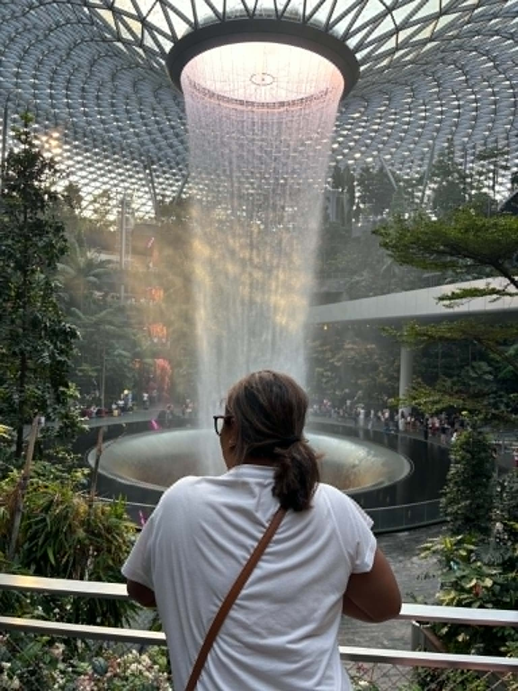

À propos de moi About me
Hoby Nirina
Rasoloarimanana
Je suis ingénieure agronome et chercheure doctorante en sciences agro-économiques à l’Université d’Antananarivo.
Mes travaux portent sur la modélisation des risques et des incertitudes qui conditionnent le financement durable des aires protégées à Madagascar. J’associe l’inférence bayésienne, la simulation stochastique et l’analyse institutionnelle pour éclairer les décisions en finance de la biodiversité.
I am an Agronomist and PhD candidate in Agro-Economics at the University of Antananarivo.
My research focuses on modeling the risks and uncertainties surrounding the sustainable financing of protected areas in Madagascar. I combine Bayesian inference, stochastic simulation, and institutional analysis to guide biodiversity finance mechanisms.
Mon parcours combine recherche académique, expertise environnementale et interventions de terrain. J’interviens sur l’évaluation d’impact, la concertation des parties prenantes, la planification stratégique ainsi que le suivi-évaluation et la gestion opérationnelle de projets de conservation.
Mes expériences acquises au site Ramsar de Torotorofotsy, au sein du Département Environnement d’Ambatovy et dans le cadre de divers programmes de conservation ancrent ma démarche dans les réalités institutionnelles et socio-économiques malgaches.
Mon objectif est de contribuer au développement d’instruments financiers robustes, équitables et pérennes, adaptés aux enjeux de la conservation de la biodiversité.
My background bridges academic research, environmental expertise, and field-based interventions. My experience covers environmental impact assessment, stakeholder engagement, strategic planning, monitoring & evaluation (M&E), and operational project management.
My work at the Torotorofotsy Ramsar site, within Ambatovy’s Environment Department, and across various conservation initiatives deeply grounds my approach in Madagascar’s institutional and socio-economic realities.
I aim to support the design of robust, equitable, and long-term financial mechanisms tailored to biodiversity conservation challenges.
Domaines d’expertise & de recherche Research & Professional Expertise
- Finance de la biodiversitéBiodiversity Finance
- Gestion des aires protégéesProtected Area Management
- Analyse et modélisation des risquesRisk Modeling & Analysis
- Inférence bayésienneBayesian Inference
- Simulation stochastiqueStochastic Simulation
- Gouvernance environnementaleEnvironmental Governance
- Évaluation d’impact environnementalEnvironmental Impact Assessment
- Suivi-évaluation (S&E)Monitoring & Evaluation (M&E)